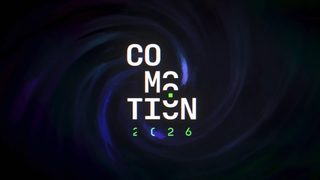
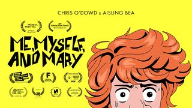
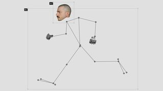
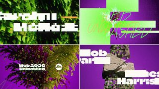

点封面在页面里播放（Vimeo / YouTube / X 需要代理；Vimeo 若没自动开始，再点一下播放键）。觉得好就点「喜欢」，有想法就写在下面的框里保存，我每天出日报前会读，存进偏好和审美库；会多找同类，但每天仍保持类型分散。
目录 01 ZIRKA Interceptor 网站（Awwwards 11-09 SOTD）02 Knots Made Easy（Stargazer rope）03 Mantras（devouringdetails.com）04 年份切换的玻璃放大镜（miskov.ee）05 WebGL fold experiment（滚动展开的三折信纸）06 Sluice 首页主视觉（数据流过闸门）07 CARSON TIME（Swatch × David Carson 发布片）08 Earth Is Eating Itself09 Extrafazant 网站（Awwwards 11-08 SOTD）10 Son Lux「Out Into Us」MV（Vimeo Staff Pick）－ 看完剔除（19 条）拆 细拆：Codegrid 三折信纸
01 UI动效 3D质感 数据可视化
ZIRKA Interceptor 网站（Awwwards 11-09 SOTD）
qream（@qream_design）/ Awwwards · X 2026-11-09 【看过画面（抽帧）】
X 19 秒已下载，抽 12 帧看过
字体未识别
好在哪 约 19 秒：笔记本放在一块灰色方台上，背后是橙色渐变墙。屏幕里是黑底的无人机网页，大号橙色数字 246、339、15、5800 依次跳出来，旁边一个白色小标签，再加一圈细线仪表盘。最后切到瞄准框画面可借 做工具实测的开头：把录屏贴进一台放在台子上的笔记本里，背景只用一种颜色，屏幕上一次只给一个大数字，比直接全屏放录屏更有产品片的感觉
展开全文
02 代码动画 知识讲解 3D质感
Knots Made Easy（Stargazer rope）
baz（@baz7c8，threejs 官方号转发） · X 2026-11-07 【看过画面（抽帧）】
49 秒已下载，抽 12 帧看过
好在哪 竖屏网页：米色底上只有一根带纹理的 3D 麻绳，按步骤自己打结（单结、称人结），下面一条带分段点的进度条，每段配一句说明，比如「Make a loop」。绳子的捻纹和末端的金属扣都看得清可借 讲操作步骤时照搬：一个 3D 主体加一条分段进度条，每到一步停住并换一句字幕，竖屏用 Three.js 就能做
展开全文
03 字体版式 代码动画 3D质感
Mantras（devouringdetails.com）
Rauno Freiberg（@raunofreiberg） · X 2026-11-09 【看过画面（抽帧）】
12 秒已下载，抽 12 帧看过
字体未识别
好在哪 约 12 秒：浅灰底上一条斜着的白色长纸带，上面竖排着一列列句子首字母，像一排卡片的边。纸带有厚度和柔和投影，其中一张卡片会被抽出来，露出一句完整的话，比如「Focus means saying no」。画面只有一个橙色小点可借 做金句或要点合集：把所有句子排成一条 3D 纸带，一次只抽出一张卡片说一句，比一张张字卡平切更有层次
展开全文
04 UI动效 转场
年份切换的玻璃放大镜（miskov.ee）
Ilya Miskov（@ilyamiskov） · X 2026-11-09 【看过画面（抽帧）】
19 秒已下载，抽 12 帧看过
字体未识别
好在哪 约 19 秒竖屏：黑底个人主页上，2024、2025、2026 三个年份之间滑过一颗玻璃胶囊，经过的字被放大，边缘有一点彩色色散。下面的文章列表跟着淡入淡出，书架里的书一本本换可借 做时间线或版本对比：用一颗会放大文字的玻璃胶囊在选项间滑动，再让下面的内容跟着淡入淡出，比直接高亮更有质感
展开全文
05 代码动画 转场 3D质感
WebGL fold experiment（滚动展开的三折信纸）
Codegrid（@codegridweb） · X 2026-11-08 【看过视频】
38.4 秒完整看过
字体未识别（衬线体）
好在哪 约 38 秒网页录屏：深色底中央一行衬线字「A Note Awaits」，往下滚，一张折好的纸从底部进来，像三折信一样一片片翻开，铺成写满字的信，再滚出去换成「Delivered」。往回滚就倒放折回去。折痕、纸面颗粒都是 GLSL 手写可借 做「信息展开/收起」：一张纸分上下两片错开翻开，翻起的那片给下层投一点影，铺平后留两道折痕。动画进度直接绑在滚动或帧上，Three.js 平面加顶点动画能做
展开全文
06 数据可视化 UI动效 代码动画
Sluice 首页主视觉（数据流过闸门）
Dominik Mészáros（@kcinimoDM） · X 2026-11-09 【看过画面（抽帧）】
12 秒已下载，抽 12 帧看过
字体未识别
好在哪 约 12 秒：黑底上 40 条琥珀色像素数据流从左边涌来，在中间被挤过一道窄门，再散开。下面一行大白字标题，只有「once.」是琥珀色。一张图就把产品讲明白了可借 讲「很多输入汇成一个出口」这类概念：用一束像素流挤过窄口再散开，强调色只给一个词
展开全文
07 字体版式 MG 3D质感
CARSON TIME（Swatch × David Carson 发布片）
João Vaz Oliveira · Vimeo / Stash 2026-11-09 【看过画面（抽帧）】
Vimeo
34 秒已下载，抽 12 帧看过
字体未识别（Carson 手作拼贴字）
好在哪 约 34 秒：白底上 David Carson 的拼贴字和近 100 款表带图案在 C4D 里随机组合，表带一会儿竖排，一会儿绕成一圈数字，最后收在一只表上。前半段慢，后半段切得很碎可借 做版式片头：把一组图案素材做成同一个 3D 物体（这里是表带），让它们排队、旋转、汇成一个，白底能压住拼贴的乱
展开全文
08 知识讲解 数据可视化 3D质感
Earth Is Eating Itself
Cleo Abram · YouTube Shorts / X 2026-11-08 【看过画面（抽帧）】
48 秒已下载，抽 12 帧看过
好在哪 约 48 秒竖屏：地球、金星、岩石剖面块轮流出现，荧光黄绿的箭头、线和标签直接画在画面上，中间插 Cleo 本人出镜和化石实拍。还是你喜欢过的「地球上画箭头」那套可借 竖屏讲解：3D 地球或剖面块当底，只用一种荧光色画箭头和标签，口播镜头穿插在中间
展开全文
09 转场 字体版式 UI动效
Extrafazant 网站（Awwwards 11-08 SOTD）
Dylan Brouwer / Awwwards · X 2026-11-08 【看过画面（抽帧）】
10 秒已下载，抽 12 帧看过
字体未识别
好在哪 约 10 秒：一块克莱因蓝的圆形色块张开，露出白底上的大号粗体标题「BRENGT JE MERK IN BEWEGING」，鼠标划过时小方块作品图一张张跟着冒出来，最后蓝色块又合上可借 做开场或收尾：用一块纯色圆形张开露出标题，收尾再合上。标题旁边跟一串小缩略图，就能顺带展示作品
展开全文
10 剪辑节奏 实拍剪辑
Son Lux「Out Into Us」MV（Vimeo Staff Pick）
Alex Cook · Vimeo Staff Pick 2026-11-06 【看过画面（抽帧）】
5 分 42 秒，只下了前 2 分钟，抽 12 帧看过
切点是 ffmpeg 场景检测估的，没听音乐
好在哪 前 2 分钟抽帧：沙尘暴压向一座木屋，屋里一家人坐在窗边的逆光里，暗调，只有窗户亮。镜头很长，自动切点检测前 2 分钟大约 20 个切点，多数一个镜头停 4–10 秒可借 想做慢节奏、有情绪的段落时参考：一个镜头停够 5 秒以上，光只从窗户进来，用一个大环境镜头（沙尘）收尾
展开全文
看完剔除（19 条） Laundry · 霓虹赛博游戏场景，颜色太满，不克制

Anaissa Ruiz Tejada & Cristian Sandoval · 霓虹粒子加故障字，属于要排除的光效炫技

John Michell（Vimeo Staff Pick） · 13 分钟扁平卡通叙事短片，颜色浓烈

Andrea Aurelio Napoli / Codrops · 线条小人加照片头，偏手作恶搞，不够精致
Emil Kowalski · AI 编程技能推广，画面是灰色线框对比示意
endisaliaj · 超级赛亚人金光特效，属于廉价光效
Cleo Abram · 同一作者今天只放一条，这条紫绿荧光更重
Tendril · Vimeo 403 下不到，没看画面，且是 10 月初的作品

Escafandra Studio · 视频在 framerate.tv 播放器里，下载 404，没看画面，不写
今日细拆 · 代码动画（替换原定的英雄镜头）
一张纸、两道折痕：把「信息展开/收起」做成滚动驱动的 3D 翻折 【看过视频】完整看了 38.4 秒，下面的秒数按视频写 Codegrid 的 WebGL 折纸实验。整段只有一张纸：往下滚，三折信一片片翻开成一封写满字的信；往回滚就原样折回去。机位不动，没有花哨光效，质感全靠阴影、高光、颗粒和折痕。正文说折叠、颗粒、折痕都是 GLSL 手写。
时间线（按视频秒数） 0–1s：深色背景，中央一行衬线字「A Note Awaits」 1–5s：往下滚，标题往上移出，折好的纸从底部进来，翻开成写满字的平铺信纸 5–7s：纸往上移出，「Delivered」从底部进来停在中间 7–13s：往上滚，整段倒放：纸重新折起，「A Note Awaits」回到中央 13–38s：来回滚着测试，15–19s 快速展开，23–25s 停在半折状态再退回，结尾纸是平铺的 动是怎么动的 全程是滚动驱动的网页录屏，没有光标、没有点击 动画进度和滚动位置完全绑死（scrub）：滚多少动多少，本身没有额外的 ease-out 或回弹，停滚就冻住 三折（C-fold）：纸分上中下三等份。展开时上片先沿上折痕翻开 180°，然后下片再往下翻开；折回去是反过来的顺序 机位一直正面不动，不转也不缩放；纸只做上下位移加原地 3D 翻折 质感从哪来 翻起来的那片纸会在下层投一块柔和的接触阴影 弯折的边缘有一点柔和高光 纸面有细细的噪点颗粒 铺平之后仍然留着两道深色折痕线 纸没有厚度，正反两面都渲染 颜色和字体 #111111 背景#F5F5F5 纸（米白，略暖）#111111 纸上文字（近黑）
右边有一条暗色的自定义滚动条。字体是衬线体，像 Times New Roman / Georgia / Garamond 这一类，具体未识别（衬线体）。
在 Remotion / Three.js 里怎么做（我的做法建议） 进度只用一个数：Remotion 里 progress = interpolate(frame, [起, 止], [0, 1])，网页里就用滚动位置算。不要另加缓动，想要原片那种「跟手」感就保持线性；做成片时想柔一点，再自己决定加不加 纸用一个 PlaneGeometry，分成上中下三段。中段不动，上片绕上折痕转、下片绕下折痕转，各 180° 两片错开时间：比如 progress 0–0.5 只翻上片，0.5–1 只翻下片；收起时同一个进度反着走，顺序自然就反过来了 下层阴影跟角度走：翻起的片越接近竖直，压在下面那片上的阴影越深，铺平时阴影消失。shader 里用翻折角度算一个暗度乘到下层颜色上 边缘高光：在折痕附近加一条很窄的亮带，强度也跟角度变 纸面：米白底加一层细噪点，铺平后在两道折痕位置画两条深色细线，不要抹掉，这是「被折过」的证据 材质设成双面（side: DoubleSide），镜头正面固定，只让纸做上下位移和翻折 放进鱼知道的片子里怎么用 做科普里的「信息展开/收起」：比如讲一个概念时，先出一行标题，一张折好的纸进来，翻开就是这段的要点，讲完纸折回去送走，换下一段的标题。
它和你点过赞、评论过「爆炸拆解可以参考」的 jhey 拆解是同一路：一个物体按顺序拆开再合上，观众看得清先后。区别是这里只有一张纸，更克制，适合文字多的段落。
看原帖 ↗
Awwwards SOTD、X（@raunofreiberg、@ilyamiskov、@codegridweb、@kcinimoDM、threejs 转发、@cleoabram）、Stash、Vimeo Staff Picks、Motionographer
 X
X